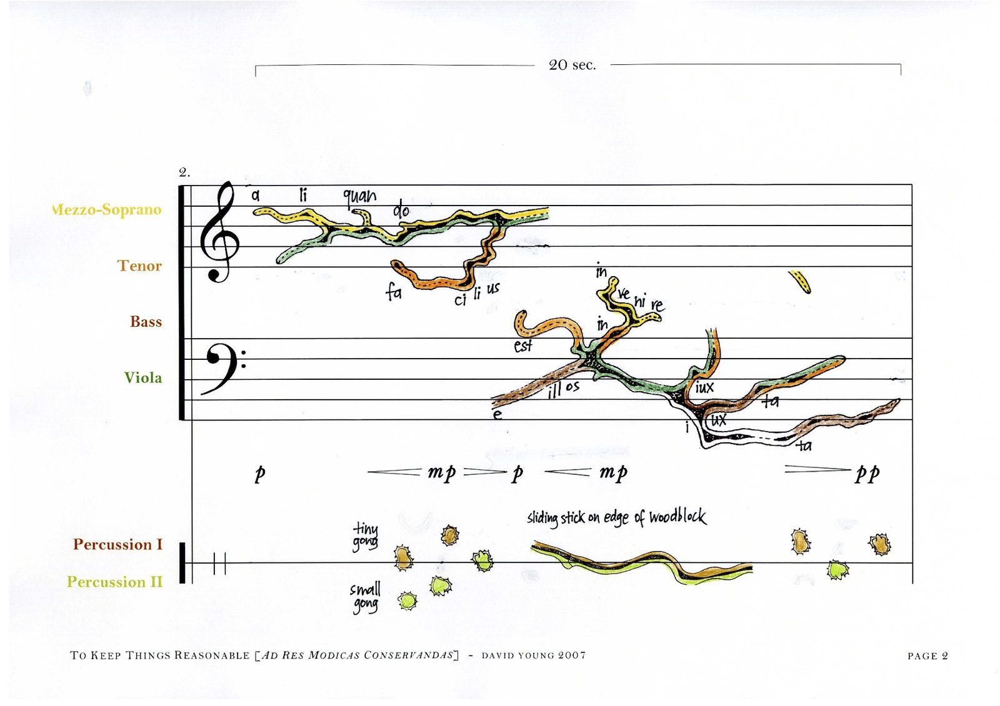

[Ad res modicas conservandas]
Commissioned by The Song Company and Ensemble Offspring, this work for voices, viola and percussion takes as inspiration John Cage's lifelong engagement with mycology — his mushroom hunting, his taxonomies, his habit of finding one thing while looking for another. The score takes its graphic notation from botanical illustrations and microscopic images of fungi: sinuous coloured lines moving across musical staves, indicating voice and instrument as continuous, living forms.
The libretto is a poem by Cynthia Troup, translated into Latin by Neville Chiavaroli. The subject is Cage's own account of how he came to mushrooms — looking for strawberries, finding something else entirely.
“... it’s a balancing operation to keep things reasonable, because if you use indeterminacy in connection with the gathering and eating of mushrooms, you might kill yourself.”
John Cage in conversation with Steve Sweeney-Turner, 1990

Score, page 2. Graphic notation derived from botanical illustrations and microscopic images of fungi.
Recording
Score
“Young’s innovation lies not so much in vocal technique as in his unique visual form of musical communication, in which the idea behind the work informs the aesthetic substance of its score.”
Melissa Lesnie, Australian Music Centre, 2007
Source illustrations
Illustrations from mycological reference works, used as the basis for the graphic notation. Likely from Stanislaw Domański, Mała flora grzybów (Warsaw, 1974) or J. A. von Arz, M. J. Figueras & J. Guarro, Sordariaceous Ascomycetes without Ascospore Ejaculation (Berlin, 1988).
Performance history
Further reading
Credits